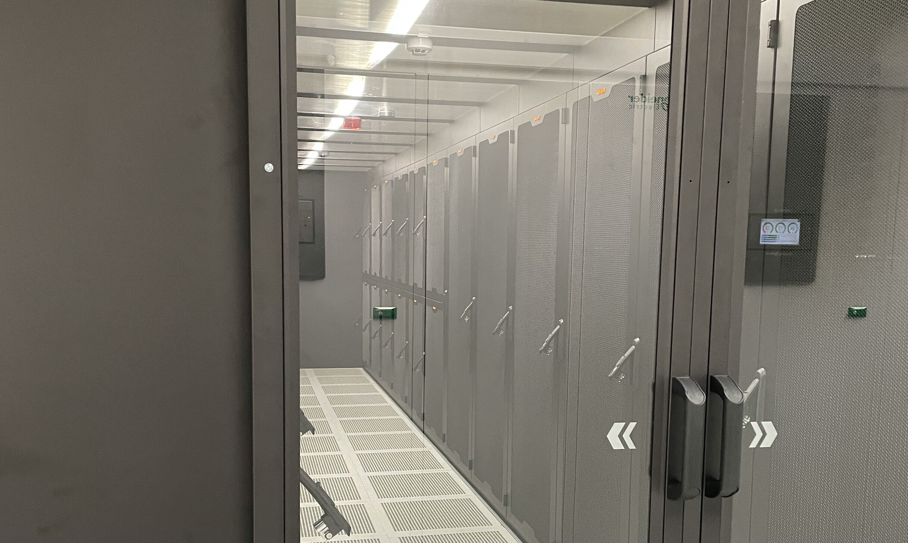

01a · Grey Space

Grey Space Services
We transform grey space into fully operational data center environments by delivering structured cabling and infrastructure services that form the backbone of reliable operations — on time, to specification, at scale.
End-to-end sourcing, logistics coordination and materials management for fit-out projects of any scale
Full cable tray, ladder rack and containment installation above racks and below raised floors
Compliant with TIA-568, ISO/IEC 11801 and EN 50173 standards — with full as-built documentation
Hot aisle / cold aisle containment design for optimised airflow and reduced PUE